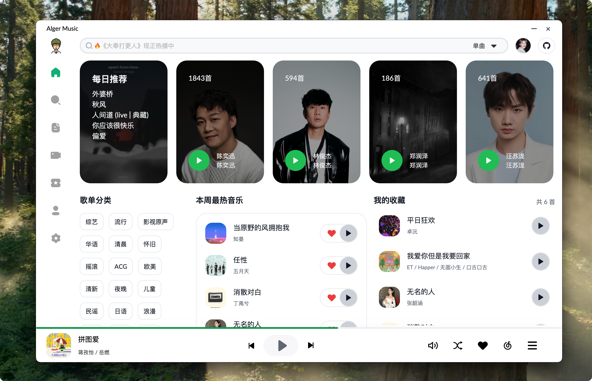
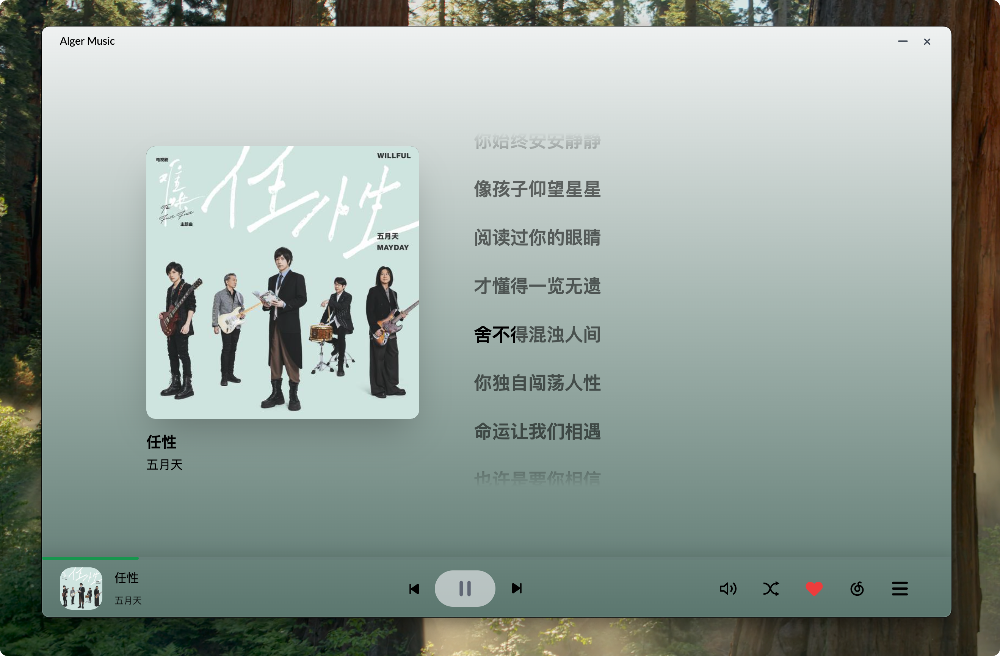

AlgerMusicPlayer 里藏得最深的 5 个功能——用了半年才摸透
以为它只是网易云播放器？批量下载灰色歌曲自动解析、歌词淡出动画、屏幕取色器……这 5 个隐藏功能，老用户都未必全知道。
你以为 AlgerMusicPlayer 就是个界面清爽的网易云替代品？从alger music官网下载来打开就能播、下载几个歌单、调个主色调——完事儿了对吧。我当初也是这么想的，从官方下载拿了安装包装完直接用了三个月，每天就是搜歌、播放、后台挂着。
直到最近翻设置面板翻得比较深——从并发下载数调到歌词动画再到取色器——才发现这软件藏得真深。好多功能不是摆在明面上的，或者埋在二级设置里没做引导，默认用户根本碰不到。v5.1.0 还悄悄加了一批东西，更新日志提了一句"优化"但不告诉你具体改了啥。
今天把摸透的这几个掏出来，都是真能用得上的——不是那种"支持 XX 格式"的常规特性，是你得主动去找、找到了会说"我靠原来还能这样"的那种。

一、批量下载 + 灰色歌曲自动解析：一套组合拳
先讲最爽的那个。很多人点了歌单右上角就没下文了，以为批量下载就是正常歌曲能下、灰色歌曲跳过去——那你就错了。
它的批量下载有个联动逻辑藏得很深：正常歌曲直接拉取，灰色歌曲会先自动触发 UNM 解析，解析成功就下载替代音源继续，解析失败才标记跳过。整条流水线串在一起，你只管点批量下载，中间解析、重试、切换音源全是自动的。
我之前攒了一个两百多首的歌单，里面大概有三十多首灰色歌曲。点了批量下载之后就去开了个会，回来一看——正常歌直接落盘、灰色歌大部分解析成功补了音源、只有两首真的没资源标了失败。换其他播放器要么让你手动一首一首点、要么灰色歌直接跳过。
在哪找：歌单页面右上角菜单里的「批量下载」，或者专辑页面的「全部下载」。没什么门槛，但就是没人点。
二、下载队列能调优先级——别让新歌等老歌
批量下载一触发，所有歌曲就排队进队列了。大部分人以为队列就是先来先下、老老实实等——其实它是活的。
设置面板里你能看到整个下载队列，每首歌都能暂停、取消，还能上移下移改优先级。我现在习惯用这个逻辑：新歌单里急着要听的那几首，直接拖到队列最前面先下；不急的放在后面慢慢跑。
v5.1.0 还重构了播放列表的持久化，队列状态改成防抖写入——之前我切去刷网页再切回来，有时候队列状态会乱，现在不会了，你改了优先级它就稳稳记住。
在哪找：下载队列面板（下载过程中自动弹出，或者设置 → 下载 → 查看队列历史）。队列里每首歌右边都有上下箭头图标，就是调优先级用的。
三、双行歌词的分组淡出动画——藏在 v5.1.0 更新里
桌面歌词窗口大家可能都开了，但你有没有想过，它的显示模式可以换，而且 v5.1.0 给双行模式偷偷加了个分组淡出动画？
默认是传统硬切：上一行突然消失、下一行突然出现。但它有个隐藏配置——两行之间不是硬切，而是上一行淡出 + 下一行淡入的过渡动画。切换过程大概 300ms，后来翻alger music文档才知道这个时长还能自己调，两行之间还有平滑衔接。
我是学歌的时候发现的。之前练新歌，双行模式确实能看到上一句下一句，但切换那一下总觉得有点跳。开了淡出动画之后，感觉整个歌词流顺了很多，录歌录屏也更自然。

在哪找：设置 → 歌词 → 显示模式，选「双行显示」之后，再往下翻会看到一个「淡出动画时长」滑块。默认 300ms，嫌太慢太快都能调，不喜欢可以直接关掉变回硬切。也可以右键桌面歌词窗口直接切显示模式，更快。
四、主色调取色器能从屏幕任意位置取色
主色调自定义这功能不算隐藏——设置里就有「外观 → 主色调」，调色板选颜色或者输入十六进制代码都行。但取色器那个选项，我赌 80% 的用户没注意过。
部分系统下，主色调选择器里会出现一个屏幕取色器（就是那个吸管图标）。点了之后你可以把光标移到屏幕上任意位置——桌面壁纸、浏览器标签页、游戏里的 UI、甚至视频画面里——点一下就把那个颜色抓过来当主色调。
我现在常用的配色方案就是从桌面壁纸里取的，蓝绿色调，和专辑封面的模糊背景搭起来特别和谐。之前一直在调色板里瞎选，选来选去就那几个颜色，取色器一开世界就不一样了。
在哪找：设置 → 外观 → 主色调，打开颜色选择器，右下角会有个吸管图标。Windows 和 macOS 支持最好，Linux 可能因为系统权限限制用不了。
五、下载失败自动重试 + 连续失败跳过：批量任务的稳定器
这个功能你平时感觉不到它的存在，但一旦网络波动或者音源超时，它就开始干活了。
Alger 的下载引擎默认会自动重试 2~3 次。不是傻傻地等一会儿再点重试，而是有退避策略的——第一次等 3 秒、第二次等 10 秒这样。连续重试都失败了，它不会卡死整个批量任务，而是跳过那一首继续下一首。
失败的条目会留在下载历史里，你事后可以手动点重试。我之前换了个网络环境批量下歌，大概有十几首因为 IP 地域问题第一次拉不到，重试一两次就成功了。如果没有这个自动重试，我得手动一首一首点，那可太崩溃了。
在哪找：不用找，默认就开着。你要调重试次数或者超时时间的话，去设置 → 下载 → 高级选项里。
几个别踩的坑
讲完好东西，说几个需要注意的：
并发下载数别瞎堆。设置里并发下载数默认 3，我之前调到 8 想加速，结果 100M 光纤 + SSD 也没快多少，反而磁盘写入瓶颈卡了一会儿。带宽够不够是一回事，磁盘吞吐是另一回事。建议带宽一般或者用机械硬盘的，保持 2~4 就行。
主色调换了之后别忘了切到暗色主题看看。有些亮色系（比如浅粉、米黄）在深色背景上对比度不够，字会看不清。选好之后同时切明暗主题预览一下，确认两边都 OK。
灰色歌曲解析不是 100% 成功。UNM 解析需要拉取第三方音源，偶尔也会挂。批量下载时解析失败的歌曲会被标记，但不会卡住队列——事后在下载历史里手动重试就行。
最后
AlgerMusicPlayer 不是那种功能堆砌的播放器，它的好多特性都是"用得上的时候特别香"的类型。可能是因为做的人比较克制，没把所有选项都甩在主界面——藏得深，但值得挖。
用了半年摸出这几个，后面发现新的再补充。总之就是，别让它只是个"能下载的播放器"——把它用透了，能省不少事。源码和相关文档在三个仓库都有维护，主站在GitHub，国内访问推荐看Gitee，另外还有一份镜像在GitCode。